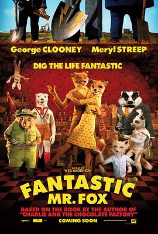

了不起的狐狸爸爸 / Fantastic Mr. Fox
又名：超级狐狸先生(台) / 狐狸先生无得顶(港) / 神奇老狐狸 / 非凡的狐狸老爸
作品信息
| 导演 | 韦斯·安德森 |
| 编剧 | 韦斯·安德森 / 诺亚·鲍姆巴赫 / 罗尔德·达尔 |
| 主演 | 乔治·克鲁尼 / 梅丽尔·斯特里普 / 詹森·舒瓦兹曼 / 埃里克·蔡斯·安德森 / 比尔·默瑞 / 华莱士·沃洛达斯基 / 迈克尔·刚本 / 威廉·达福 / 欧文·威尔逊 / 贾维斯·考科尔 / 韦斯·安德森 / 凯伦·达菲 / 罗宾·赫尔斯通 / 雨果·吉尼斯 / 海伦·麦克洛瑞 / 罗曼·科波拉 / 尤玛·马努夫 / 杰瑞米·道森 / 加斯·詹宁斯 / 布莱恩·考克斯 / 特里斯坦·奥利弗 / 詹姆斯·哈密尔顿 / 史蒂文·M·拉尔斯 / 罗伯·赫尔索夫 / 珍妮弗·弗切斯 / 艾莉森·阿巴特 / 茉莉·库珀 / 阿德里安·布罗迪 / 马利欧·巴塔利 / 马丁·巴拉德 |
| 类型 | 喜剧 / 动画 / 冒险 |
| 制片国家/地区 | 美国 |
| 语言 | 英语 |
| 上映日期 | 2009-10-14(伦敦电影节) / 2009-11-25(美国) |
| 片长 | 87分钟 |
| IMDb | tt0432283 |
最后一次看到是 2026-08-12T21:09:51+08:00 · 豆瓣原页